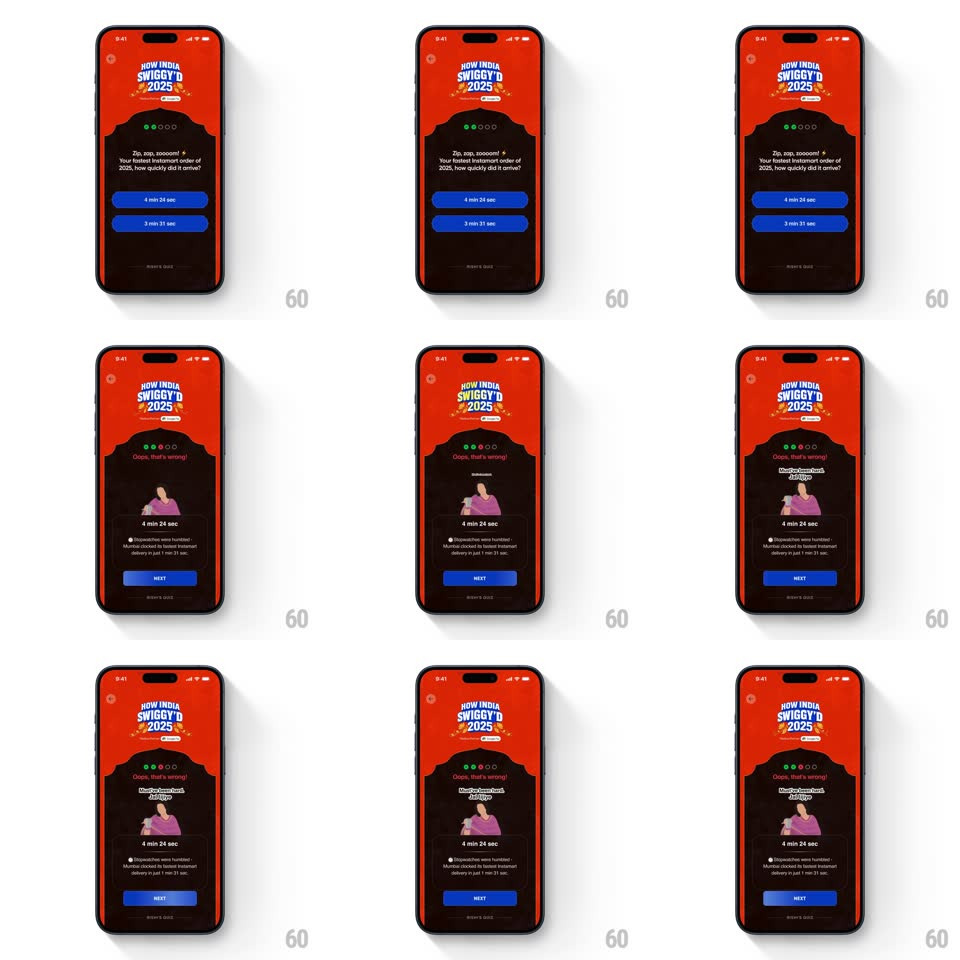

Media
Frame-by-frame

Rebuild this animation 1:1: Swiggy's "How India Swiggy'd 2025" wrong-answer reveal - the quiz screen shakes off the miss, swaps to the dark feedback state with a springy illustration, the corrected answer, and a fun-fact line.

Rebuild this animation 1:1: Swiggy's "How India Swiggy'd 2025" wrong-answer reveal - the quiz screen shakes off the miss, swaps to the dark feedback state with a springy illustration, the corrected answer, and a fun-fact line.
## Integration
Integration: stack-agnostic spec - springs given as stiffness/damping, timed motions as duration + curve; map every value to your framework and animation library of choice.
## Scene
The quiz screen, Swiggy red: the "HOW INDIA SWIGGY'D 2025" badge, progress dots, the question ("Zip, zap, zoooom! Your fastest Instamart order of 2025, how quickly did it arrive?") and two blue answer pills (4 min 24 sec / 3 min 21 sec). Wrong state: a dark panel with "Oops, that's wrong!", an illustration of a woman reacting at her phone, the correct answer pill kept below, a fun-fact footnote, and a blue NEXT button.
## Motion spec
Pattern: wrong-answer state transition with a springy feedback illustration.
- On the wrong tap, the tapped pill flashes red and the whole question block does a quick horizontal shake (+/-10px, 3 cycles, 350ms).
- The red question panel slides/fades into the dark feedback panel (crossfade 300ms with the content dropping 16px): "Oops, that's wrong!" pops in first (scale 0.9 -> 1, spring ~400/14).
- The illustration springs up from below (translateY 40 -> 0, spring ~350/12, clear overshoot, ~450ms) and settles with one wobble.
- The correct answer pill highlights under her (border brightens, 250ms) while the wrong option stays dimmed out.
- The fun-fact line fades up (200ms), then NEXT fills blue and rises last (translateY 16 -> 0, 250ms).
## Calibration
- The shake is the only red flash - the feedback panel itself is calm dark, letting the illustration carry the moment.
- The correct answer must be unmissable: it stays full-opacity while everything else about the question dims.
## Reduced motion
Crossfade between panels (250ms) without the shake or the illustration spring.
## Don't miss
- The progress dots stay visible across both states - the quiz frame never breaks.
- The footnote keeps the real data point (the 3 min 21 sec record) - it's the payoff fact, not filler.